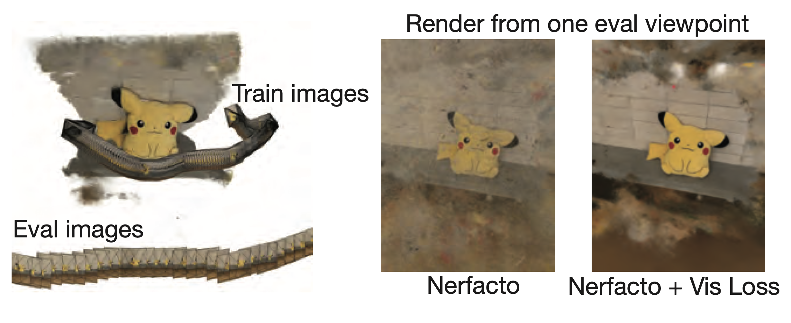

CleaNeRF
üßπ Erasing Artifacts from
Casually Captured NeRFs üßπ
UC Berkeley


TLDR: We propose an evaluation procedure for in-the-wild NeRFs, and we present a method that uses a 3D diffusion prior to clean NeRFs.
Abstract
Casually captured Neural Radiance Fields (NeRFs) suffer from artifacts such as floaters or flawed geometry when rendered outside the path of the training views. However, common practice is still to evaluate on every 8th frame, which does not measure rendering quality away from training views, hindering progress in volume rendering. We propose a new dataset and evaluation procedure, where two camera trajectories are recorded of the scene, one used for training, and the other for evaluation. We find that existing hand-crafted regularizers do not remove floaters nor improve scene geometry in this more challenging in-the-wild setting. To this end, we propose a learned, local 3D diffusion prior and a novel density score distillation sampling loss. We show that this learned prior removes floaters and improves scene geometry for casual captures.
Video
Here is an overview video of our paper.
Model Overview
We learn a local 3D prior with a diffusion model that regularizes the 3D geometry of NeRFs. We use importance sampling to query a cube with NeRF densities. We binarize these densities and perform one single denoising step using a pre-trained 3D diffusion model. With these denoised densities, we compute a density score distillation sampling (DSDS) that penalizes NeRF densities where the diffusion model predicts empty voxels and pushes the NeRF densities above the target w where the diffusion model predicts occupied voxels.
Visibility Loss
Our visibility loss enables stepping behind or outside the training camera frustums. We accomplish this by supervising densities to be low when not seen by at least one training view. Other solutions would be to store an occupancy grid or compute ray-frustum intersection tests during rendering. Our solution is easy to implement and applicable to any NeRF.
CleaNeRF Dataset
We show training and evaluation videos from the 12 scenes of the CleaNeRF dataset. We hope this casual captured dataset that bridges the gap between current evaluation practice and the users requirements, will refocus the community's efforts.
CleaNeRF Results
We compare CleaNeRF with various baselines. Click the baselines buttons and swipe left and right to see the results. Our CleaNeRF method appears on the right. You can also use the pause button and select different methods for the same capture.
Citation
If you use this work or find it helpful, please consider citing (BibTeX):